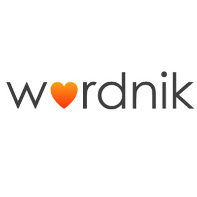

Revolutionize the way you communicate
using text filters
"This app changed the way I chat with my friends. I am now able to communicate with people I know in India without having to type it out in Hindi using Google Translate."
-Sujay Pattuwardan, User of Simplex
This easy to use communication channel breaks the global communication barrier amongst people of different social backgrounds.
The Pubnub API allowed us to easily use realtime chatting. The users chatbox changes as he/she types (a.k.a #REALTIME)
Our world class algorithm analyzes words based on usage in the past 20 years and then compares it to the Bing Search API.
Simplex eliminates the communications barrier between people using innovative realtime technologies and a renowned powerful algorithm developed by people who have had many years of experience in computer science. This application offers an easy to use interface so users of all backgrounds can intuitively understand how to use the applicaiton. Filters provided increase and decrease intelligence levels of words and they also change the language of the text. This application will change the world.
APIs we used:
